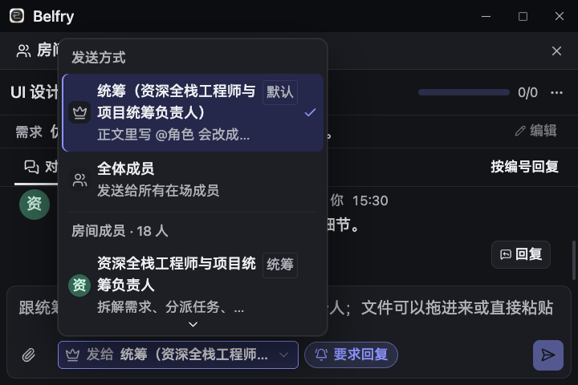
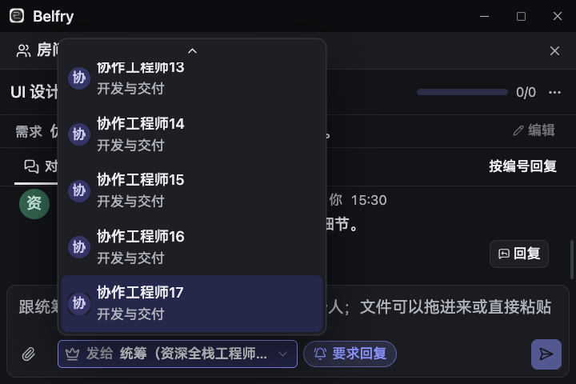
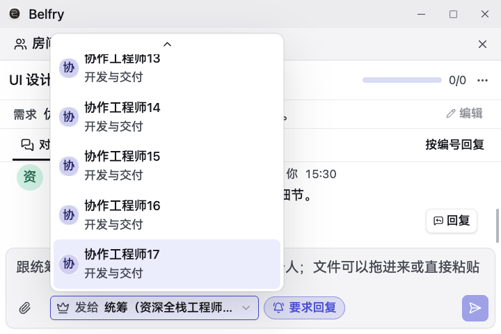
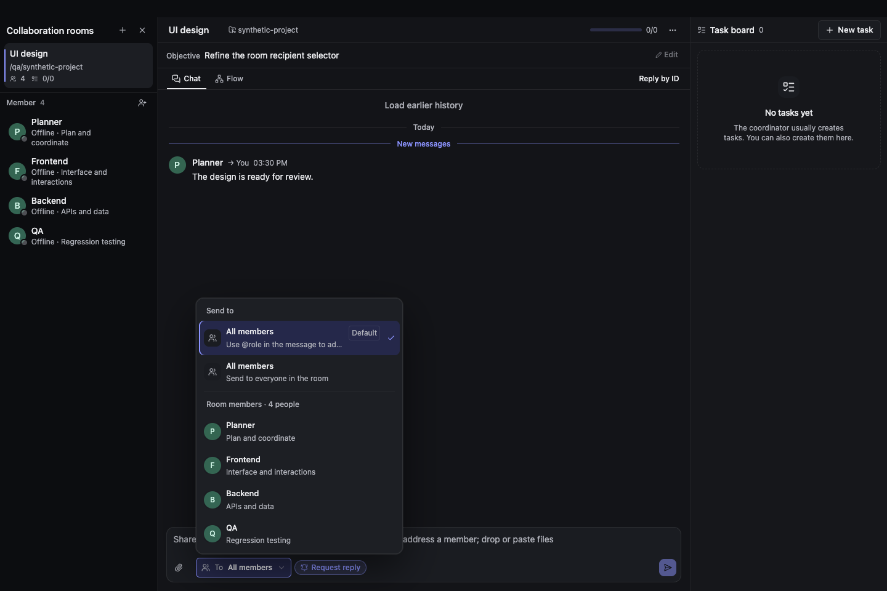

BELFRY · T32
更清晰的人员选择
把紧凑的文字菜单升级为带身份和职责的收件人列表。以下均为真实生产组件的浏览器截图，局部对比保持相同坐标与比例。
默认 / 群发 / 成员分组头像与职责长名称自适应键盘与焦点亮 / 暗主题
暗色 · 展开列表
亮色 · 展开列表
收起状态
32px 轻描边控件、身份图标和展开反馈；名称过长时省略，悬停可查看全名。
小窗口与大字号
720 × 480、实际设置字号 20px、18 位成员、长角色名。列表避让窗口顶部控件，名称可换行，方向键可滚动到最后一位成员。
暗色 · 展开
亮色 · 展开
暗色 · 键盘定位末项
亮色 · 键盘定位末项
英语 / 无统筹 / 减少动态效果
